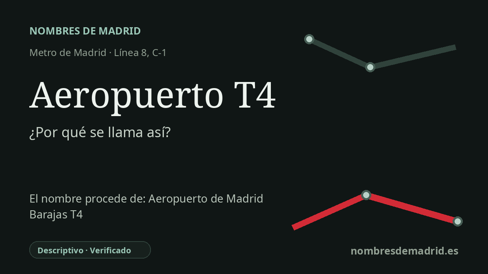

Publicado el · Investigación de Nombres de Madrid · Cómo verificamos cada origen · 9 fuentes consultadas
Respuesta rápida
Aeropuerto T4 toma su nombre directamente de la Terminal 4 del principal aeropuerto de Madrid. La línea 8 de Metro llegó a la terminal en 2007, tras la apertura de la T4 en 2006; la estación de Cercanías llegó en 2011.
La historia del nombre
El nombre **Aeropuerto T4** es práctico y literal. Significa “Aeropuerto Terminal 4” y orienta al viajero hacia la Terminal 4 del principal aeropuerto de Madrid, hoy denominado oficialmente Aeropuerto Adolfo Suárez Madrid-Barajas. Por tanto, no procede de un topónimo antiguo ni de una dedicatoria personal, sino de una etiqueta de transporte asociada a una terminal concreta.
La Terminal 4 fue la gran nueva área construida para Madrid-Barajas a comienzos de los años 2000. Aena sitúa su inauguración el 4 de febrero de 2006, y el primer vuelo comercial, el Iberia IB2640 con destino a Barcelona, salió a primera hora del 5 de febrero de 2006. La terminal y su satélite, T4S, formaban parte del Plan Barajas, concebido para duplicar la capacidad del aeropuerto y modernizar el papel de Madrid como gran nodo internacional.
El Metro llegó después de la propia terminal. La línea 8 se prolongó hasta Aeropuerto T4 el 3 de mayo de 2007, creando una segunda estación de Metro en el aeropuerto: una para las terminales T1, T2 y T3, y otra para la T4. La conexión ferroviaria de Cercanías llegó más tarde, con la inauguración del acceso a la T4 el 22 de septiembre de 2011 y el inicio del servicio comercial el 23 de septiembre de 2011.
El nombre también remite a uno de los edificios contemporáneos más reconocibles de Madrid. La Terminal 4 fue diseñada por Richard Rogers Partnership junto con Estudio Lamela; su larga cubierta ondulante, el techo cálido de bambú y los soportes estructurales codificados por colores la convirtieron en un hito arquitectónico además de una infraestructura de transporte. El proyecto obtuvo el RIBA Stirling Prize de 2006, reforzando la asociación pública entre “T4” y un espacio aeroportuario muy identificable.
No hay apenas duda sobre el origen del nombre de la estación. El matiz principal es administrativo: cuando abrió la estación de Metro, el aeropuerto seguía llamándose oficialmente Madrid-Barajas; en marzo de 2014 el BOE cambió su denominación oficial a Aeropuerto Adolfo Suárez Madrid-Barajas. La estación, sin embargo, conservó el nombre breve y funcional Aeropuerto T4, porque el número de terminal sigue siendo la información más útil para los viajeros.